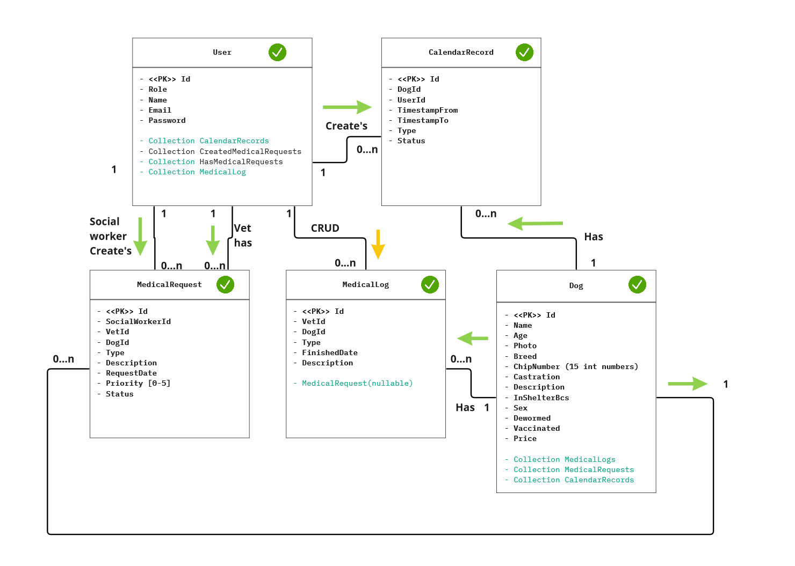

Zvíøecí útulek
- Autoøi
- Tomá¹ Szabó
xszabo16@stud.fit.vutbr.cz -
- Kapitán
- Kalendáø a jeho CRUD operace a validace vstupù
- Vytvoøení autentizace pomocí JWT tokenu
- Vytvoøení automatického odhla¹ování po neèinnosti pøihlá¹eného u¾ivatele
- Knihovna na kontrolu pøístupu na frontendu UserUtils
- Pøihla¹ování u¾ivatele a validace vstupù
- Ukládání hesla do databáze pomocí bcrypt algoritmu
- Registrace u¾ivatele a validace vstupù
- Nastavení serveru a propojení Symfony s Reactem
- Dokumentace
- Marek Klofera
xklofe01@stud.fit.vutbr.cz -
- Vytvoøení wireframu v nástroji figma
- Vytvoøení uvodní stránky
- Vytvoøení detailu psa a jeho CRUD operace
- Vytvoøení veterinárních záznamù a jejich CRUD operace
- Vytvoøení stránky pro zobrazení v¹ech u¾ivatelù a jejich mazání a zmìnu statusu
- Pøidávání psù a validace pøi vstupních hodnotách
- Vytvoøení komponenty pro zobrazení dat v podobì tabulek
- UI filtrovaní
- Dokumentace
- Jan ©uman
xsuman02@stud.fit.vutbr.cz -
- Konfigurace SQL databáze a prostøedkù na komunikaci
- Vytvoøení SQL fixtures
- Implementace komponenty na filtrování psù na hlavní stránce
- Vytvoøení stránky pro zobrazování historie venèení u¾ivatele
- Vytvoøení stránky pro zobrazování rezervací venèení, zmìnu stavù a mazání
- Vytvoøení komponenty pro filtrování dat v tabulkách
- Vytvoøení videa
- Dokumentace
- URL aplikace
- http://bulbasaur.binic.xyz
- http://utulek.binic.xyz
U¾ivatelé systému pro testování
Uveïte prosím existující zástupce v¹ech rolí u¾ivatelù.
| Login |
Heslo |
Role |
| admin@email.cz |
admin |
Administrátor |
| mdobes@email.cz |
mdobes |
Veterináø |
| mdrahy@email.cz |
mdrahy |
Peèovatel |
| jkral@email.cz |
jkral |
Dobrovolník |
| volunteer@email.cz |
volunteer |
Dobrovolník (neaktivovaný) |
Video
video
Implementace
Struèná dokumentace k implementaci, která popisuje, které èásti projektu (napø. PHP skripty) implementují
jednotlivé pøípady pou¾ití.
- Registrace - UserController.php, route: '/signup', API route: 'POST API/user/signup'
- Vidí seznam zvíøat - DogController.php, route: '/', API route: 'GET API/dog'
- Vidí detail zvíøat - DogController.php, route: '/dog/{id}', API route: 'GET API/dog/{id}'
- Informace o ùtulku - IndexController.php, route: '/{cesta}', popis: v¹e co nezaèíná API øe¹í react
componenta, která nás odkazuje na stránky
- Rezervace zvíøete na venèení - CalendarController.php, route: '/calendar', API route: 'POST
API/calendarEvent/add'
- Vidí kalendáø rezervací - CalendarController.php, route: '/calendar', API route: 'GET API/calendarEvent/§
- Vidí historii svých venèení - CalendarController.php, route: '/Historie-venceni', API route: 'GET API/walkingHistory
- Vidí a edituje veterinární po¾adavky
- Vidí a edituje zdravotní záznamy zvíøat
- Eviduje zvíøata
- Potvrzuje dobrovolníky - UserController.php, route: '/user-list', API route: 'POST API/user/changeUserRole
- Schvaluje rezervace zvíøat na venèení, eviduje zapùjèení a vrácení - CalendarController.php, route: '/rezervace', API route: 'GET API/calendarEvent/changeStatus
- Vytváøí po¾adavky na veterináøe
Databáze
Zde vlo¾te grafické schéma relaèní databáze (tabulek v databázi).

Instalace
Struènì popi¹te:
- Instalace PHP balíèku (Verze PHP 8.1.12)
- Instalace composer (Verze Composeru 2.4.2)
- Instalace nginx(Verze NGINX 1.18.0)
- Instalace nodejs(Verze NodeJS 12.22.9)
- Instalace npm pøes nvm(Verze NVM 0.39.1 a NPM 9.1.2)
- Nastavení nginx konfigurace
- Klon repozitáøe do '/var/www/' slo¾ky
- Kontrola práv
- Instalace composer a npm balíèkù v repozitáøi
- Konfugrace .env.prod souboru(pøidání hodnot pro propojení s databází, hash klíèe pro jwt, vypnutí
debuggování)
- Instalace microsoft sqlsrv pro Ubuntu s PHP-FPM podle návodu (návod
zde)
- Vygenerování JWT klíèù ('php bin/console lexik:jwt:generate-keypair')
Známé problémy
Kontrola políèek probíhá na serveru a u vìt¹iny se nezobrazuje chybová hlá¹ka. Stránka veterinárních po¾adavkù není implementovaná.